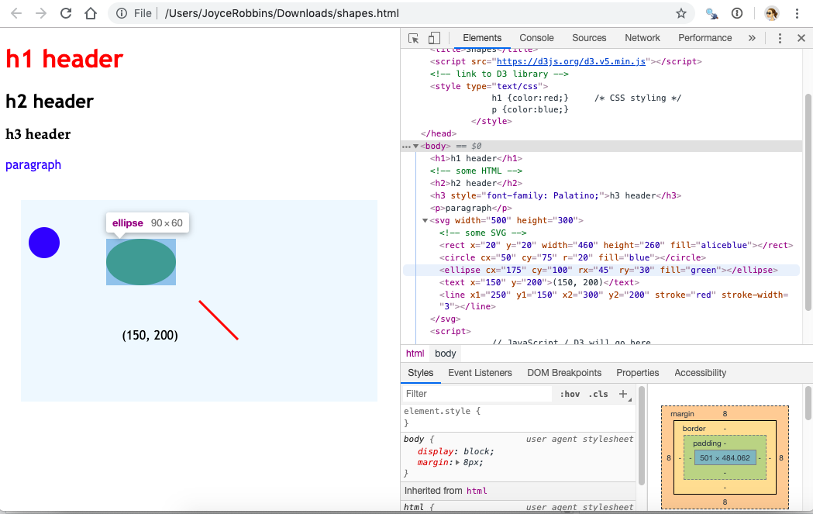

1 Jump in the deep end
Let’s skip the explanations and start coding in D3 right now. Why? So you can see the benefits and know what you’re working toward when you get stuck in the weeds. Then we’ll go back and start learning step by step.
1.1 Get ready
If you don’t have it already, download the Chrome browser.
Download a copy of
shapes.html: open the following page and then click File, Save Page As…:shapes.html. (Or download a zip of the whole repo. Clicking here will start the download. Or fork and clone the repo).If Chrome is your default browser, open
shapes.htmlby double clicking it. Otherwise, open it with File, Open File… in Chrome.
1.2 Elements tab
In Chrome, click View, Developer, Developer Tools, then the Elements tab.
Hover the mouse over various elements in the
<body> ... </body>section. Observe the highlighted sections in the rendered web page on the left of the screen. Click on the mini black triangles to the left of the<body>and<svg>tags if needed to open these sections of the DOM tree. Your screen should look like this:

- Now try the reverse: right click on elements on the web page, choose “Inspect” and see what is highlighted in the Elements pane. Get comfortable with the connection between the code on the right and the rendered elements on the left.
1.3 Console tab
- Switch to the Console tab, next to the Elements tab. Let’s practice running some code. Note that the code is unrelated to the
shapes.htmlweb page that we have open.
We will spend a lot of time in the Console since it’s interactive – think R console. Eventually we will switch to including JavaScript/D3 in
.htmlor.jsfiles and use the Console only for testing things out or debugging.
- Type the following lines of code at the prompt (
>), press enter after each line–that is, after the semicolon (;)–and see what happens:
1.4 Modify elements
Now we’ll start using D3 to manipulate elements on the page. Try the following, by entering one line at a time in the Console as before:
d3.select("circle").attr("cx", "200"); d3.select("circle").attr("cx", "500"); d3.select("circle").attr("cx", "100"); d3.select("circle").attr("r", "30"); d3.select("circle").attr("r", "130"); d3.select("circle").attr("r", "3"); d3.select("circle").attr("fill", "red"); d3.select("circle").attr("fill", "aliceblue"); d3.select("circle").attr("fill", "lightseagreen");
Note that “select” and “attr” are separate operations chained together with “.” – think pipe (%>%) operator.
Refresh the page. What happened?
Go to Elements. Look at the value of the
y1attribute of the SVG<line>element. Go back to the Console and enter the following:Switch back to Elements and observe. What happened?
Stay in Elements and refresh the page. What happened to
y1?Return to the Console to make style changes to the HTML elements:
1.5 Transitions
Try these:
d3.select("circle").transition().duration(2000).attr("cx", "400"); d3.select("ellipse").transition().duration(2000).attr("transform", "translate (400, 400)"); d3.select("line").transition().duration(2000).attr("x1", "400"); d3.select("line").transition().duration(2000).attr("y1", "250"); d3.select("p").transition().duration(2000).style("font-size", "72px");Experiment with more transitions.
1.6 Interactivity
Set up a function to turn the fill color to yellow:
Add an event listener to the circle that will be trigger a call to
goyellow()on a mouseover:Test it out.
Add the same event listener to the ellipse. Test it out.
Create a function
goblue()that changes the fill color to blue.Add event listeners to the circle and ellipse that will trigger a call to
goblue()on a mouseout. Test out your code.Try out a click event. (Note the use of an anonymous function.)
Try another click event. What’s happening?